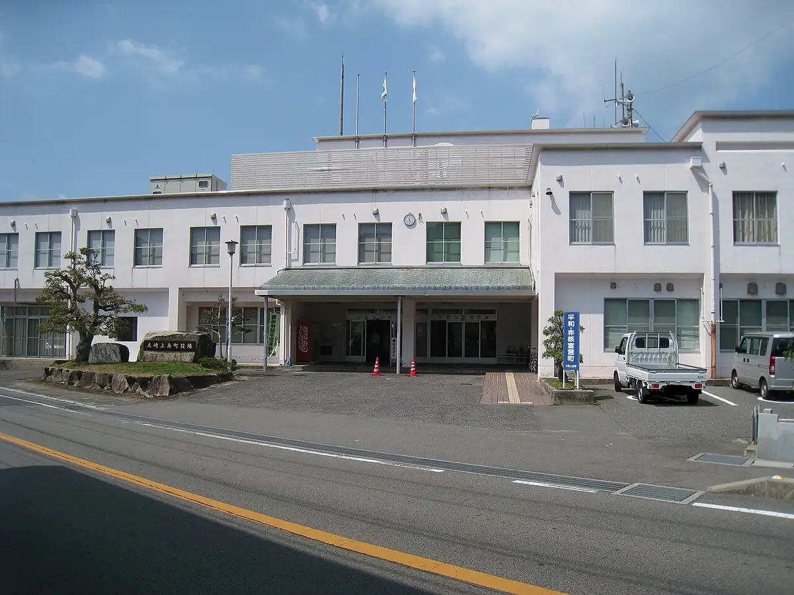
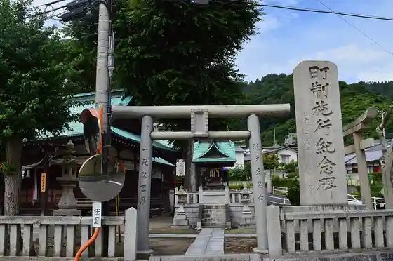

Japan / Hiroshima / Osakikamijima
Osakikamijima
Osakikamijima · Hiroshima
Osakikamijima
Highlighted on the Hiroshima map.

Stay
Ki no E Onsen Hotel Seifu Kan
Dining
Toku Mori Shokudo
Kaishu Yagura
Nagaya Mon Kafe
Kazumasa Do Seika
Hoshi to Yo
Takemoto Kare
Kita Yutaka Ramen
AQUA ROOM SKY MARINE
Men Ya Bon
Kuma Ta
Chiyo
Mikatakafe
Iwasaki Noen Kafe
HOGALAKA
Kohii to
Nyukapu
Onsen
Ki no E Onsen Hotel Seifu Kan Public Bath
Sights
Kami Mineyama
Umi to Shima no History Museum Taibo Gatsu Tei
Kinoe Fureai Local History Museum
Nagashima Bridge
Kinoe Itsukushima Shrine
